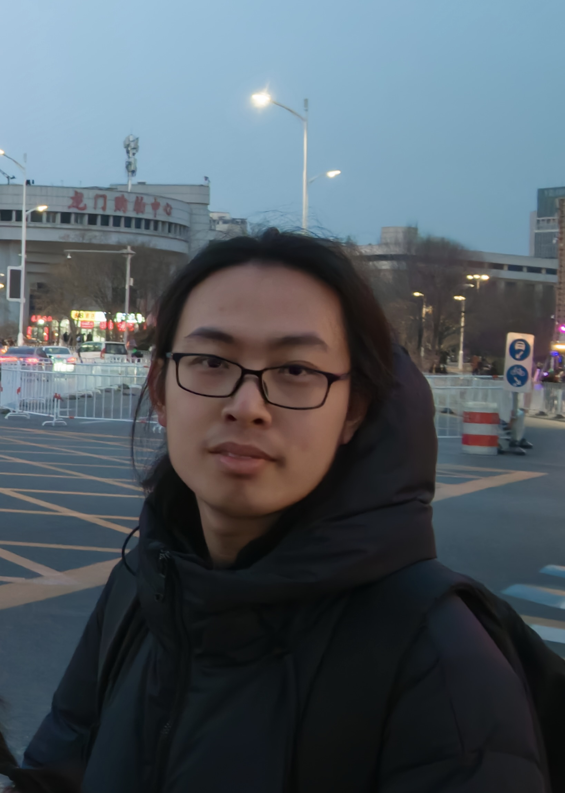

Yixiao Yu, PhD Student
NJU Theory Group
Email: yixiaoyu At smail Dot nju Dot edu Dot cn
About me
I am a third year PhD student in the theory group of NJU advised by Prof. Jingcheng Liu and Prof. Yitong Yin. Prior to this, I got my bachelor's degree from SDU in 2023 where I was advised by Prof. Haitao Jiang.
I'm interested in TCS and focus on approximate sampling and counting now. Here is my CV.
Publications and preprints
(authors are sorted by lexicographic order by default, while papers marked with (*) are sorted by contribution)
4. Zero-free regions and concentration inequalities for hypergraph colorings in the local lemma regime
Jingcheng Liu and Yixiao Yu
STOC 2026 [arxiv]
3. Learning CNF formulas from uniform random solutions in the local lemma regime
Weiming Feng, Xiongxin Yang, Yixiao Yu and Yiyao Zhang
STOC 2026 [arxiv]
2. Phase Transitions via Complex Extensions of Markov Chains
Jingcheng Liu, Chunyang Wang, Yitong Yin and Yixiao Yu
STOC 2025 [arxiv] [slides]
1. Men Can't Always be Transformed into Mice: Decision Algorithms and Complexity for Sorting by Symmetric Reversals (*)
Xin Tong, Yixiao Yu, Ziyi Fang, Haitao Jiang, Lusheng Wang, Binhai Zhu and Daming Zhu
COCOON 2023 [arxiv]
|